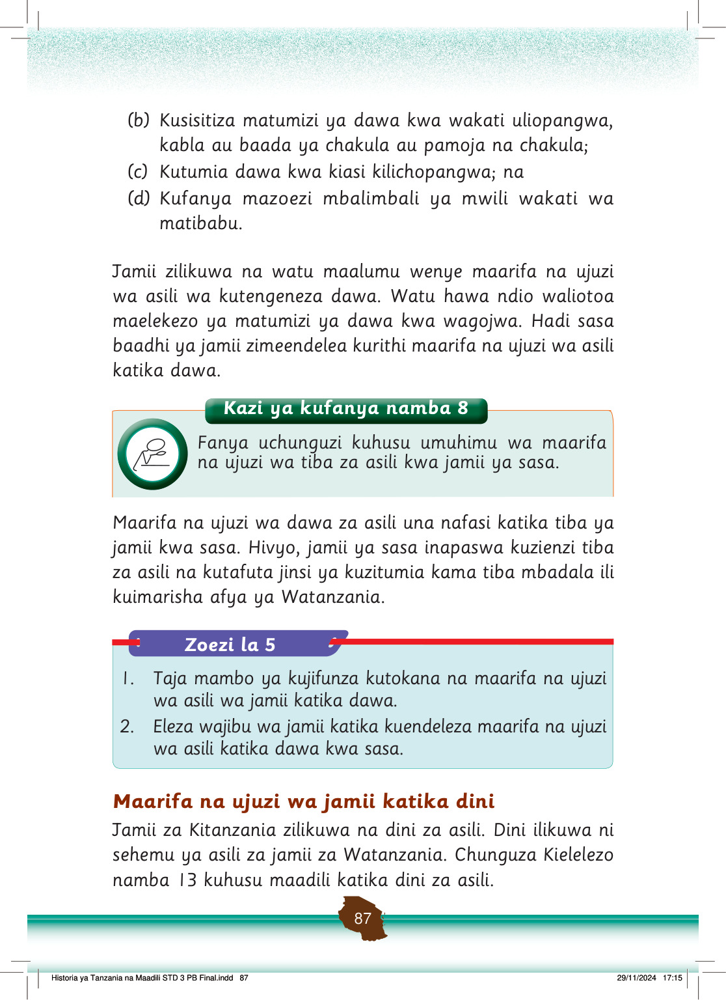

Watu watatu wamepiga magoti ndani ya pango wakifanya ibada ya jadi. Mbele yao kuna chombo kinachotoa moshi.
Kielelezo namba 13: Watu wakifanya ibada nje ya pango
Jamii zetu tangu kale ziliamini kuwapo kwa miungu yenye uwezo wa kutatua changamoto mbalimbali.
Hivyo, jamii ziliabudu miungu katika maeneo mbalimbali kama vile katika makaburi, mapango, milima, chini ya majabali au miti mikubwa.
Matambiko na sherehe zilizoendana na mila na desturi katika ibada zilifanyika wakati wa ibada za dini za asili.
Dini ilitumika kutatua changamoto katika jamii kama vile uzazi, magonjwa na majanga kama ukame.
Jamii ilikuwa na watu maalumu walioaminika kutengeneza mvua wakati wa ukame.
Pia, jamii zilikuwa na kiongozi maalumu ambaye alisimamia dini za asili.
Dini hizi zilithaminiwa, ziliheshimiwa na zilirithishwa kutoka kizazi hadi kizazi katika jamii husika.
Jamii iliamini kuwa kuheshimu na kuthamini dini ni chanzo cha baraka kwa jamii kama vile kuongezeka kwa mvua, mazao na uzazi.
Pia, waliamini ukiukaji wa miiko katika dini ni chanzo cha laana, magonjwa na majanga katika jamii.